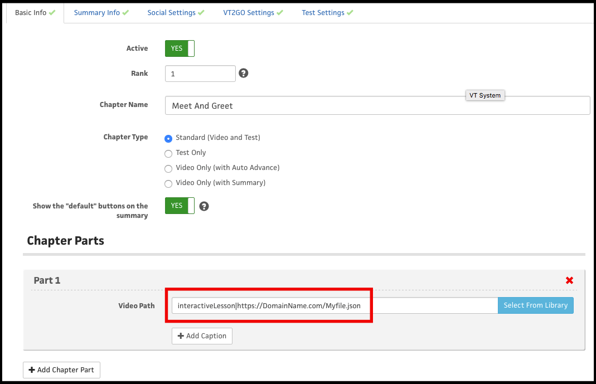

Overview
"Interactive Lesson" (or interactive video) playback in LightSpeed VT is where a number of separate videos are woven together into an interactive experience. It is currently configured via a JSON file (JavaScript Object Notation) with specific properties and values which are documented below.
The workflow to make these from scratch needs to go in 6 steps.
STEP 1: Planning
Plan it out and write your scripts. You should first make a flowchart of what you want this interactive adventure to look like on paper, then write your scripts from that.
Here is a flowchart of our example: Download
Here are the scripts from our example: Download
STEP 2: Shoot the video
It is really like shooting any other video, except there are two specific things to remember.
1st - Fade in and Fade Out - only put a Fade in on the “intro” video, and only put a “fade-out” on the closing video.
2nd - Leave time for your loops when you have buttons up for the user to select.
STEP 3: Upload your videos
This is a pretty simple step, just go in and upload them all to the Media Library, and then make note of the URL of each MP4, and cut and paste each one into a file that you can utilize in Step 4 below.
STEP 4: Make the JSON file
This is the most tricky step of the whole part, and still is not that bad.
First you need to gather all of your assets and information that you want to use, which will be:
| Assets and Information | |
|---|---|
| Paths | All of the paths to your needed videos, and a name for each one so you can reference it in the JSON file |
| Buttons | You will need the question text, the answer option text, the height and width of your button “hot spots” and the on screen measurement of where the hot spots sit, as well as the minute & second count that you want the hot spots to become “hot.” |
| Loop time | you want to know the minute & second count of where you want the loop back point to be. |
We’ll go over how to make the JSON file and what all of contents and objects are so that you can make you yourself.
STEP 5: Upload your JSON file
Upload it in the Media Library as a “document,” and clipboard the path to your JSON file in the media Library, this is what you will inset in the “Chapter Path” instead of a video.
STEP 6: Insert your JSON file as the Chapter Part
In the Courseware Manager, go and find the Chapter in question, and you will want to manually add the path to this JSON file (as opposed to “Select From Library” like you would a video). You will need to declare it as an “interactiveLesson” by adding the path with that exact text, then a “pipe-character” (or sometimes called the “vertical bar”) then the path to your JSON file. On a QWERTY keyboard, the combination of the "shift" key ⇧ Shift and the backslash "\" key outputs the character " | ".
Here is an example of what the full path should look like (note, “interactiveLesson” is case sensitive):
interactiveLesson|https://DomainName.com/Myfile.json

Making the JSON file
Here is the JSON file from our example: Download
Or, you can click on THIS link to open this JSON file at JSON Editor Online.
Note
We recommend using http://www.jsoneditoronline.org/ to build and modify your .JSON files. It is free, and it makes editing the files quick and easy.
- Root-level properties:
- debug - If set to true the player will show the button areas visually, helpful for tweaking button placement etc.
- videos - A listing of video config objects used in this interactive lesson. Note that the object keys are considered the "id" of the associated video configuration.
- Video config object properties:
- buttons - A listing of button config objects
- loopStart (optional) - An array in the format of [mins,secs] which tells the video player where to seek to once the video reaches it's end. Used for areas where buttons are presented and an interaction is expected.
- src - An absolute path to the video to be played
- captions - An object listing of absolute paths to caption xml files, note that the the object keys are the actual label that is shown in the ui the associated language.
- next - The id of a video to play upon completion
- ending - A config object that determines what happens once the video completes
- Ending config object properties:
- video - The id of another video to play once video has ended (works exactly like the next property)
- url - An array where the first item is the url and the second is the target window
- complete (optional*) - If set to false, once the video ends it won't call the complete callback
Note
If opening a url with "_self" as the target make sure you set complete to false. Otherwise a javascript error could occur.
-
Button config object properties:
- width - Pixel value for the button area's width
- height - Pixel value for the button area's height
- x - Pixel value for the button area's left position
- y - Pixel value for the button area's top position
- label - Text to show when debug is set to true
- action - A string value that is sent to any selection callbacks along with the value property
- value - A string value that is sent to any selection callbacks along with the action property
- time - An array in the format of [mins,secs] that tells the player when to activate the button area
- video - The id of a video to play once clicked
- url - An object with the string properties href (the url to be accessed), target (the window in which to open the url) and specs(properties for popup window)